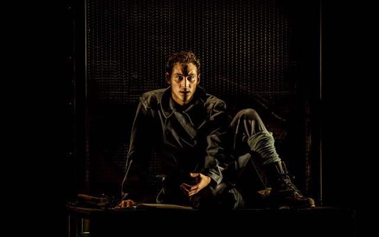

La obra de teatro "Vidas Enterradas" volverá en gira nacional a finales de año y principios de 2021, representándose...
Leer más
"El Hijo" ya disponible para su visionado en Filmin. Mateo Rubistein protagoniza esta historia en la que un joven debe...
Leer más
"Vidas Enterradas", obra teatral en la que Mateo Rubistein interpreta el papel de Primitivo, es candidata de la XXIII edición de los Premios Max de las Artes Escénicas.
Leer más

"Barro", la última obra de La Joven Compañía sobre la I Guerra Mundial, se representará en teatros como el Teatro Gayarre, en Pamplona, y en ciudades como Sevilla, Soria o Málaga.
Leer más
Comienza el proyecto escénico inclusivo "Desgana Nacional", presentado y dirigido por Mateo Rubistein, en el Centro Dramático Nacional.
Leer más
Vuelve "La Fundación" al Teatro Conde Duque y se estrena "Barro" en Teatros del Canal, ambas obras teatrales de La Joven Compañía en las que participa Mateo Rubistein.
Leer más